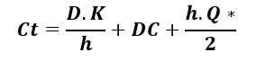
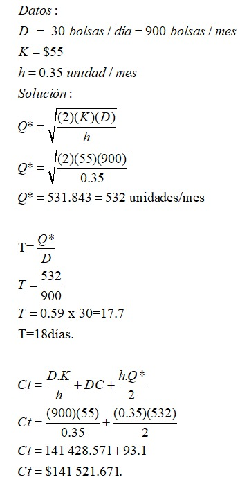

¿Qué es un árbol de expansión mínimo?
Un árbol de expansión mínimo es un tipo especial de árbol que minimiza las longitudes de los bordes del árbol. Cada arista tiene asignado un peso proporcional entre ellos, que es un número representativo de algún objeto, distancia, etc.; y se usa para asignar un peso total al árbol de expansión mínimo computando la suma de todos los pesos de las aristas del árbol en cuestión.
Cuando no hay más nodos para agregar, el árbol que hemos construido es un árbol de expansión de peso mínimo.
¿Cómo funciona el algoritmo?
Este algoritmo para ejecutar su funcionamiento requiere de ciertos pasos o proceso que te describimos a continuación los describiremos.Empezamos con un árbol que posea únicamente un nodo y no tenga relaciones. Posteriormente se debe seleccionar la relación de peso mínimo proveniente de dicho nodo y se agrega al árbol en cuestión. Este proceso debe realizarse en diversas oportunidades para unir los nodos del árbol a los demás que conforman el grafo, agregando nuevas relaciones en cada una de las oportunidades.
Algoritmo de Kruskal
Ejercicio 1.
En el siguiente sistema de redes, determine cuantos kilómetros de cable se deberá usar para la implementación de fibra óptica en el centro de Cajamarca.
Encuentre el borde con el menor peso y resáltalo.

Encuentre el siguiente borde con el peso más bajo y resáltelo
Continuando tendríamos este resultado:

Precaución: Tenga cuidado de no completar un circuito. Si su elección completa un ciclo, descarte su elección y pase al siguiente peso más grande.

Algoritmo de Prim
Ejercicio 2.
La administración de servada park necesita determinar los caminos bajo los cuales se deben tender las comunicaciones para conectar todas las estaciones con longitud mínima de cable

Elige un nodo aleatorio y resáltalo.

Para este ejemplo, el nodo C tiene tres bordes con pesos 1, 2 y 3. Resalte el borde con el peso más bajo.

Mire todos los nodos resaltados hasta ahora, resalte el borde con el peso más bajo.

Siguiendo esta lógica nos quedaría el siguiente gráfico:

Precaución: Tenga cuidado de no completar un circuito. Si su elección completa un ciclo, descarte su elección y pase al siguiente peso más grande.

Dato: si tiene más de un borde con el mismo peso puede escoger cualquiera.